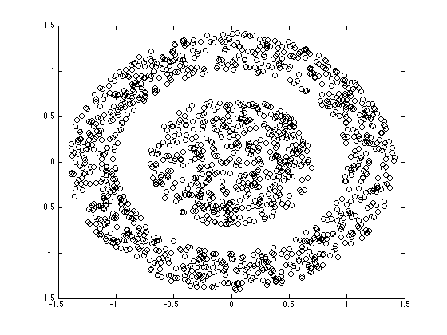
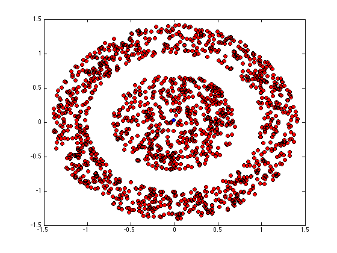
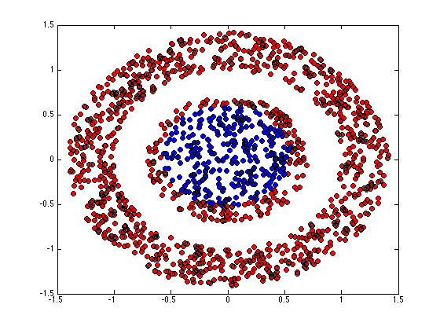
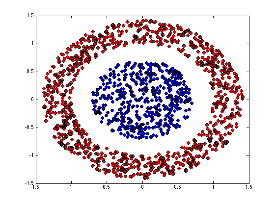
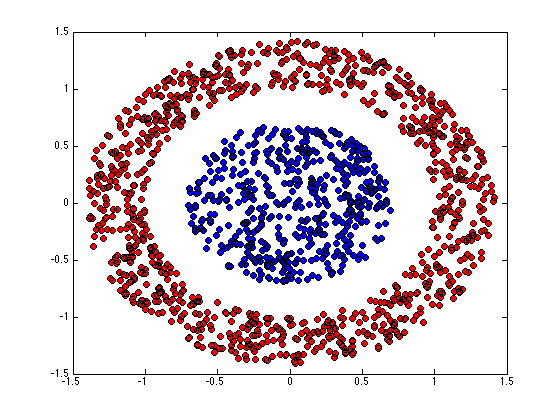

Contents
kernelkmeans.m
From A First Course in Machine Learning, Chapter 6. Simon Rogers, 01/11/11 [simon.rogers@glasgow.ac.uk] Kernel K-means
clear all;close all;
Load the data
load ../data/kmeansnonlindata
Plot the data
figure(1);hold off plot(X(:,1),X(:,2),'ko');
Compute the kernel
N = size(X,1); Ke = zeros(N); gam = 1; for n = 1:N for n2 = 1:N Ke(n,n2) = exp(-gam*sum((X(n,:)-X(n2,:)).^2)); end end
Run Kernel K-means
converged = 0; % Assign all objects into one cluster except one % Kernel K-means is *very* sensitive to initial conditions. Try altering % this initialisation to see the effect. K = 2; Z = repmat([1 0],N,1); s = sum(X.^2,2); pos = find(s==min(s)); Z(pos,:) = [0 1]; di = zeros(N,K); cols = {'r','b'};
Plot the assignments
figure(1);hold off for k = 1:K pos = find(Z(:,k)); plot(X(pos,1),X(pos,2),'ko','markerfacecolor',cols{k}); hold on end
while ~converged
Nk = sum(Z,1);
for k = 1:K
% Compute kernelised distance
di(:,k) = diag(Ke) - (2/(Nk(k)))*sum(repmat(Z(:,k)',N,1).*Ke,2) + ...
Nk(k)^(-2)*sum(sum((Z(:,k)*Z(:,k)').*Ke));
end
oldZ = Z;
Z = (di == repmat(min(di,[],2),1,K));
Z = 1.0*Z;
if sum(sum(oldZ~=Z))==0
converged = 1;
end
Plot the assignments
figure(1);hold off for k = 1:K pos = find(Z(:,k)); plot(X(pos,1),X(pos,2),'ko','markerfacecolor',cols{k}); hold on end

 
 end